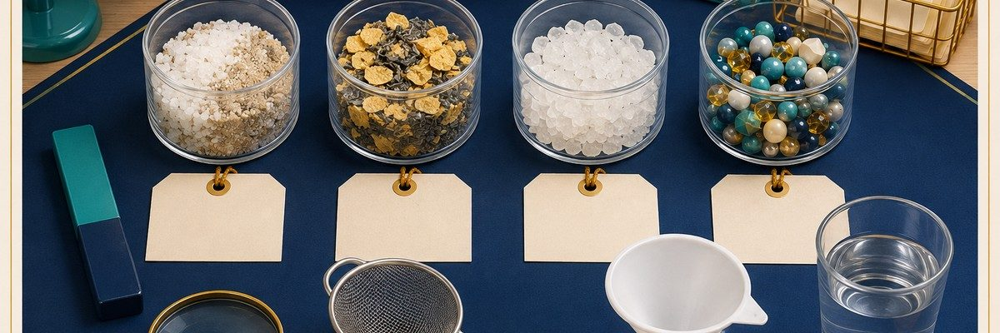

Case 01Physical properties and separation
Separate a Mystery Mixture
Four mixtures are made from familiar solids. Choose a separation method for each sample, then use physical properties to explain why your method worked.
Students receive four teacher-prepared mixtures and a small set of tools: a magnet, sieve, water, filter, and magnifier. Their job is to choose a separation method based on an observable property.
The useful part comes after the separation. Students must explain why the method worked. “I used the magnet” is a procedure. “The magnet removed the iron because iron is magnetic and sand is not” shows the beginning of scientific reasoning.